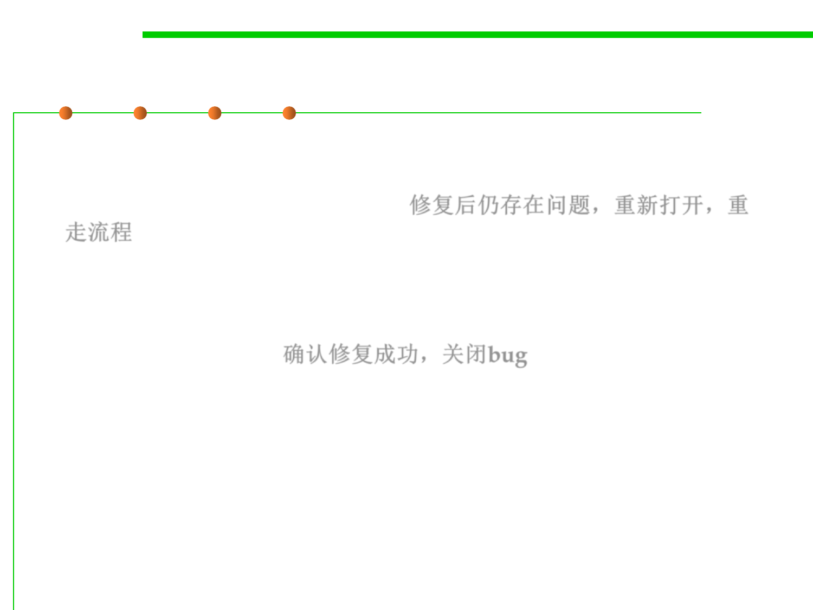

Description of Stages
7.4 Debugging
▪ Reopened: If the bug still exists even after the bug is fixed by the
developer, the tester changes the status to REOPENED. The bug
traverses the life cycle once again. 修复后仍存在问题，重新打开，重
走流程
▪ Closed: Once the bug is fixed, it is tested by the tester. If the tester
feels that the bug no longer exists in the software, he changes the
status of the bug to CLOSED. This state means that the bug is fixed,
tested and approved. 确认修复成功，关闭bug